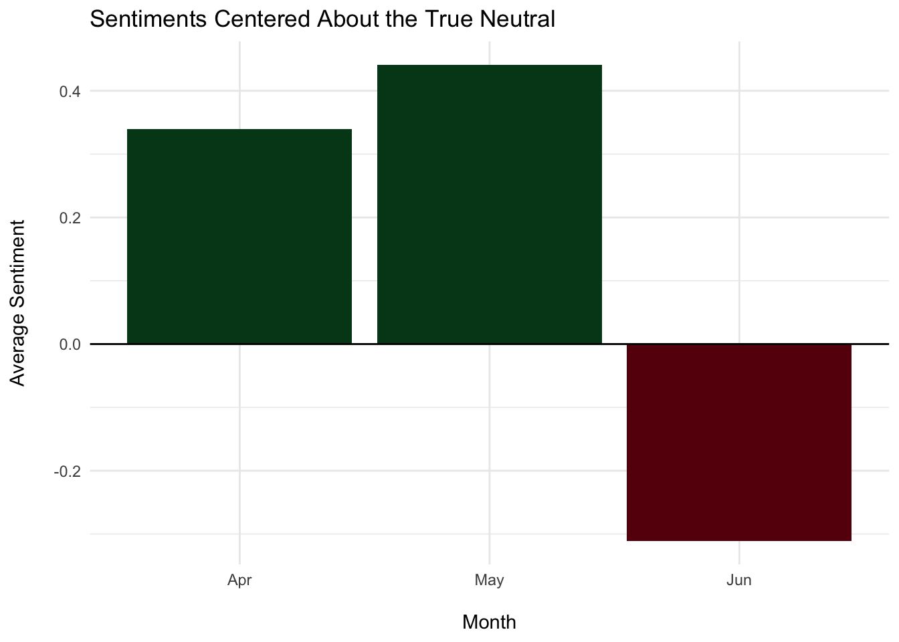
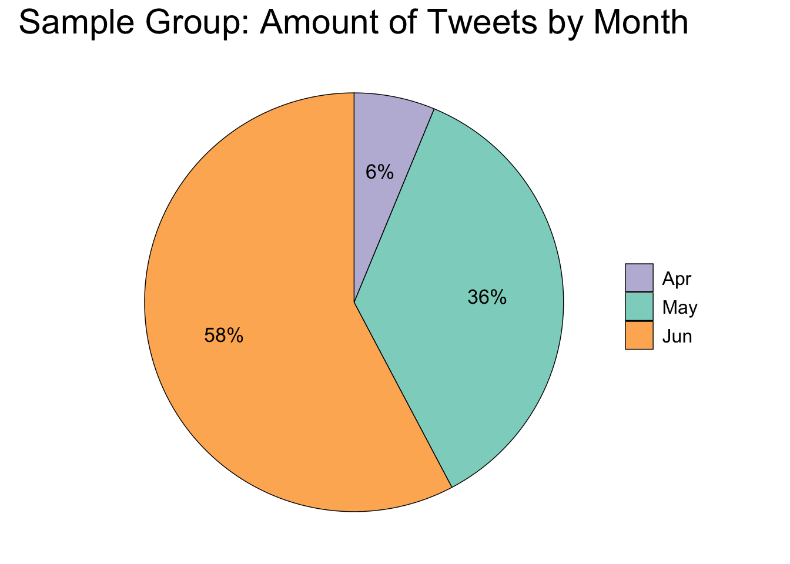
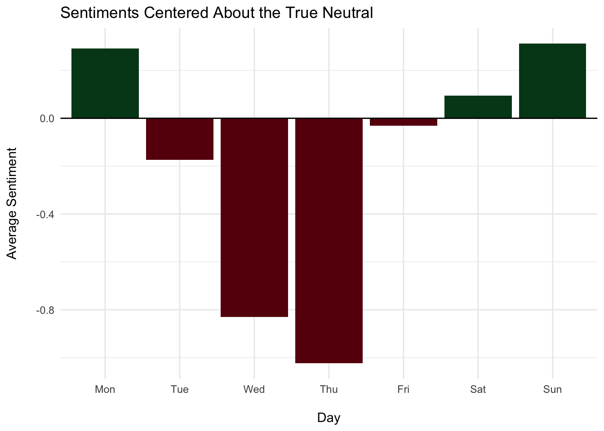
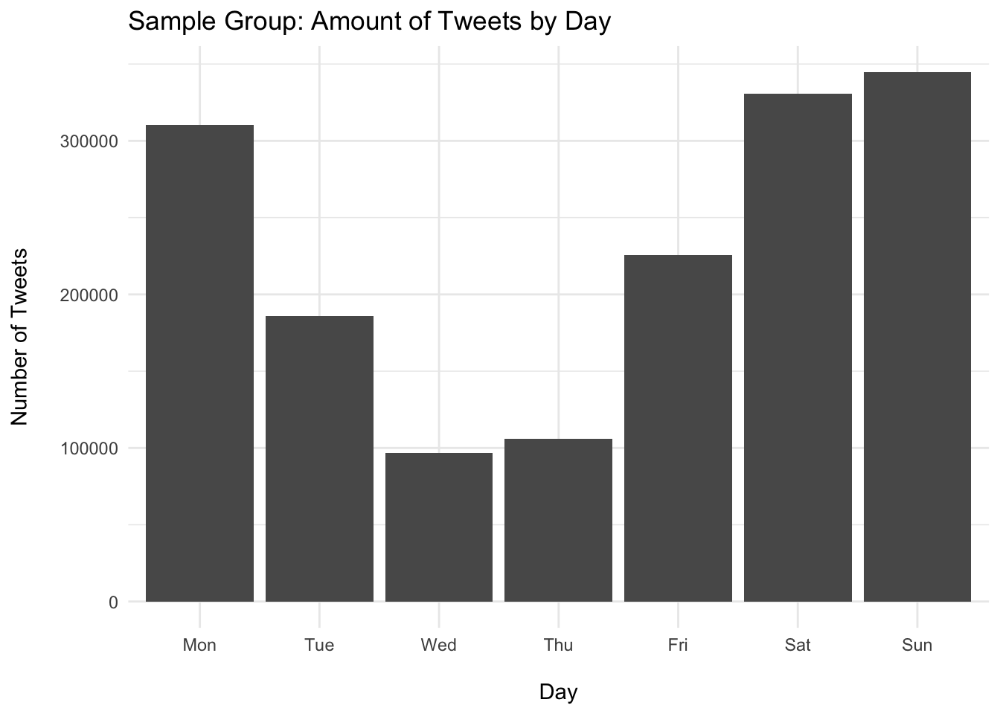
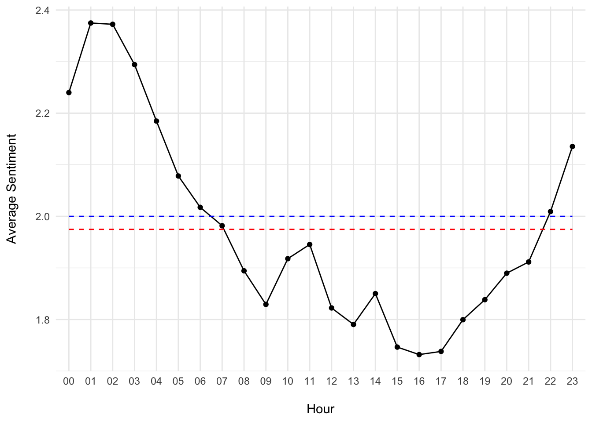

Chapter 4 Visualizing Sentiment [DA|R]
Database queries and viz using SQL and the R package dbplyr (Wickham, Girlich, and Ruiz 2022).
4.1 Description
I came across this cool dataset on Kaggle about sentiment analysis using old tweets from 2009; this project demonstrates the rationale behind using SQLite.
Motivation: Showing how I can access or create databases and query them, which allows me to do all the similar viz and analysis done in my Google Capstone project.
This process allows for multifaceted and streamlined analysis that can be adapted to professional contexts with local databases
- I.e., using SQL and R in tandem to filter/work with any database by reference until the data’s satisfactory or small enough to collect and work with locally for viz
4.2 Setup
Boilerplate code for the R packages that enable the link between R and SQL:
packages <- c("tidyverse", "lubridate", "tidytext", "dbplyr",
"RSQLite", "RColorBrewer", "wordcloud")
for (package in packages) {
if (!require(package, character.only = TRUE)) {
print("Installing package(s)")
install.packages(package, repos = "http://cran.us.r-project.org")
library(package, character.only = TRUE)
if (require(package, character.only = TRUE)) {
print("Package(s) installed and loaded")
} else {
stop("Could not install package(s)")
}
}
}4.3 Create SQL Database
For this project I create a local database from the sentiment-140.csv file with the SQLite database backend.
tweets <- read_csv("sentiment-140.csv",
col_names=c("target", "id", "date", "flag", "user", "text"),
show_col_types=FALSE) %>% glimpse()## Rows: 1,600,000
## Columns: 6
## $ target <dbl> 0, 0, 0, 0, 0, 0, 0, 0, 0, 0, 0, 0, 0, 0, 0, 0, 0, 0, 0, 0, 0, …
## $ id <dbl> 1467810369, 1467810672, 1467810917, 1467811184, 1467811193, 146…
## $ date <chr> "Mon Apr 06 22:19:45 PDT 2009", "Mon Apr 06 22:19:49 PDT 2009",…
## $ flag <chr> "NO_QUERY", "NO_QUERY", "NO_QUERY", "NO_QUERY", "NO_QUERY", "NO…
## $ user <chr> "_TheSpecialOne_", "scotthamilton", "mattycus", "ElleCTF", "Kar…
## $ text <chr> "@switchfoot http://twitpic.com/2y1zl - Awww, that's a bummer. …The special string ":memory:" causes SQLite to make a temporary in-memory database:
# Create & connect to database
db <- dbConnect(SQLite(), ":memory:")Aside
For databases hosted on a server, the code would look something like this:
db <- DBI::dbConnect(RMariaDB::MariaDB(),
host = "database.rstudio.com",
user = "hadley",
password = rstudioapi::askForPassword("Database password"))With the backend being either MariaDB, Postgres, ODBC, or BigQuery – using RMariaDB::MariaDB(), RPostgres::Postgres(), odbc::odbc(), and bigrquery::bigquery() respectively.
4.4 Write & Query Table
Now that the connection to the database is established, add the table and perform sanity checks:
# Write data
copy_to(db, tweets)
dbListFields(db, "tweets")## [1] "target" "id" "date" "flag" "user" "text"head(dbReadTable(db, "tweets"))## target id date flag user
## 1 0 1467810369 Mon Apr 06 22:19:45 PDT 2009 NO_QUERY _TheSpecialOne_
## 2 0 1467810672 Mon Apr 06 22:19:49 PDT 2009 NO_QUERY scotthamilton
## 3 0 1467810917 Mon Apr 06 22:19:53 PDT 2009 NO_QUERY mattycus
## 4 0 1467811184 Mon Apr 06 22:19:57 PDT 2009 NO_QUERY ElleCTF
## 5 0 1467811193 Mon Apr 06 22:19:57 PDT 2009 NO_QUERY Karoli
## 6 0 1467811372 Mon Apr 06 22:20:00 PDT 2009 NO_QUERY joy_wolf
## text
## 1 @switchfoot http://twitpic.com/2y1zl - Awww, that's a bummer. You shoulda got David Carr of Third Day to do it. ;D
## 2 is upset that he can't update his Facebook by texting it... and might cry as a result School today also. Blah!
## 3 @Kenichan I dived many times for the ball. Managed to save 50% The rest go out of bounds
## 4 my whole body feels itchy and like its on fire
## 5 @nationwideclass no, it's not behaving at all. i'm mad. why am i here? because I can't see you all over there.
## 6 @Kwesidei not the whole crewAs pulled from its description, this data contains the following 6 fields:
target: The polarity of the tweet
(0 = negative, 4 = positive)id: The id of the tweet
(2087)date: The date of the tweet
(Sat May 16 23:58:44 UTC 2009)flag: The query
(lyx). If there is no query, then this value isNO_QUERY.user: The user that tweeted
(robotickilldozr)text: The text of the tweet
(Lyx is cool)
Now I can also use SQL commands in this document to query the database:
SELECT *
FROM tweets
LIMIT 2| target | id | date | flag | user | text |
|---|---|---|---|---|---|
| 0 | 1467810369 | Mon Apr 06 22:19:45 PDT 2009 | NO_QUERY | TheSpecialOne | (switchfoot?) http://twitpic.com/2y1zl - Awww, that’s a bummer. You shoulda got David Carr of Third Day to do it. ;D |
| 0 | 1467810672 | Mon Apr 06 22:19:49 PDT 2009 | NO_QUERY | scotthamilton | is upset that he can’t update his Facebook by texting it… and might cry as a result School today also. Blah! |
And can also store its output as a dataframe in R if needed:
# Stored as "glimpse"
str(glimpse)## 'data.frame': 2 obs. of 6 variables:
## $ target: num 0 0
## $ id : num 1467810369 1467810672
## $ date : chr "Mon Apr 06 22:19:45 PDT 2009" "Mon Apr 06 22:19:49 PDT 2009"
## $ flag : chr "NO_QUERY" "NO_QUERY"
## $ user : chr "_TheSpecialOne_" "scotthamilton"
## $ text : chr "@switchfoot http://twitpic.com/2y1zl - Awww, that's a bummer. You shoulda got David Carr of Third Day to do it. ;D" "is upset that he can't update his Facebook by texting it... and might cry as a result School today also. Blah!"-- removing user tweetpet that only tweets "Clean me!"
DELETE FROM tweets
WHERE user LIKE 'tweetpet'-- number of users
SELECT COUNT(DISTINCT user) AS user_count
FROM tweets| user_count |
|---|
| 659774 |
-- counting number of each sentiment
SELECT target, COUNT(target) AS target_count
FROM tweets
GROUP BY target| target | target_count |
|---|---|
| 0 | 799690 |
| 4 | 800000 |
-- top 10 users
SELECT user, COUNT(user) AS tweet_count
FROM tweets
GROUP BY user
ORDER BY tweet_count DESC
LIMIT 10| user | tweet_count |
|---|---|
| lost_dog | 549 |
| webwoke | 345 |
| SallytheShizzle | 281 |
| VioletsCRUK | 279 |
| mcraddictal | 276 |
| tsarnick | 248 |
| what_bugs_u | 246 |
| Karen230683 | 238 |
| DarkPiano | 236 |
| SongoftheOss | 227 |
-- 5 tweets from the top 10 users
SELECT target, user, text, date
FROM tweets
WHERE user IN (SELECT user
FROM (SELECT user, COUNT(user) AS tweet_count
FROM tweets
GROUP BY user
ORDER BY tweet_count DESC
LIMIT 10))
GROUP BY user
LIMIT 5| target | user | text | date |
|---|---|---|---|
| 0 | DarkPiano | (aliholden?) Not good, I hate that! | Sat May 02 04:59:54 PDT 2009 |
| 0 | Karen230683 | (KingKiwi?) i want to be somewhere with no rain its not very nice here today | Tue Apr 07 01:32:50 PDT 2009 |
| 0 | SallytheShizzle | (OfficialAS?) without ASA….i’m sorry if you didn’t know that already | Fri May 22 03:10:00 PDT 2009 |
| 0 | SongoftheOss | Still upset at not being a lottery winner again…no fair | Sat May 02 07:56:42 PDT 2009 |
| 0 | VioletsCRUK | (jason_2008?) Hello! Im out of coffee this morning..that’s what i get for winding you up yesterday!!! Lol Have a good day! | Tue Apr 07 01:20:58 PDT 2009 |
-- sentiment counts from the top 5 users
SELECT user, target, COUNT(target) AS target_count
FROM tweets
WHERE user IN (SELECT user
FROM (SELECT user, COUNT(user) AS tweet_count
FROM tweets
GROUP BY user
ORDER BY tweet_count DESC
LIMIT 5))
GROUP BY user, target| user | target | target_count |
|---|---|---|
| SallytheShizzle | 0 | 183 |
| SallytheShizzle | 4 | 98 |
| VioletsCRUK | 0 | 61 |
| VioletsCRUK | 4 | 218 |
| lost_dog | 0 | 549 |
| mcraddictal | 0 | 210 |
| mcraddictal | 4 | 66 |
| webwoke | 0 | 264 |
| webwoke | 4 | 81 |
-- 5 positive tweets from top users
SELECT target, user, COUNT(user) AS tweet_count, text, date
FROM tweets
WHERE target = 4
GROUP BY user
ORDER BY tweet_count DESC
LIMIT 5| target | user | tweet_count | text | date |
|---|---|---|---|---|
| 4 | what_bugs_u | 246 | (JadeMcCray?) why limit your story to 140 chr. Tell all what is annoying you at www.iamsoannoyed.com ,it will help relieve your stress | Sat May 30 20:18:46 PDT 2009 |
| 4 | DarkPiano | 231 | (suesshirtshop?) Same to you, Sue! | Tue Apr 07 04:19:32 PDT 2009 |
| 4 | VioletsCRUK | 218 | Morning all! Hope you have a good one | Tue Apr 07 01:14:14 PDT 2009 |
| 4 | tsarnick | 212 | (RumLover?) if more than one lady agrees to attend with with you then I am fine with it! | Mon Apr 06 22:52:56 PDT 2009 |
| 4 | keza34 | 211 | (ComedyQueen?) what a fibber.dont choke when your halo slips.lol | Sun Apr 19 06:39:32 PDT 2009 |
-- 5 negative tweets from top users
SELECT target, user, COUNT(user) AS tweet_count, text, date
FROM tweets
WHERE target = 0
GROUP BY user
ORDER BY tweet_count DESC
LIMIT 5| target | user | tweet_count | text | date |
|---|---|---|---|---|
| 0 | lost_dog | 549 | (NyleW?) I am lost. Please help me find a good home. | Fri May 01 22:54:02 PDT 2009 |
| 0 | webwoke | 264 | auchh, drop by 1 (32)elitestv.com | Fri Jun 05 14:12:05 PDT 2009 |
| 0 | wowlew | 210 | isPlayer Has Died! Sorry | Thu May 14 04:02:33 PDT 2009 |
| 0 | mcraddictal | 210 | (mcr_chick?) i wanna sleep.lol. Urgh. I feel like crying | Sat May 09 19:50:38 PDT 2009 |
| 0 | SallytheShizzle | 183 | (OfficialAS?) without ASA….i’m sorry if you didn’t know that already | Fri May 22 03:10:00 PDT 2009 |
4.5 Analysis
I use regex in R to clean the tweets in order to properly tokenize the words within.
clean_tweet <- function(x) {
x %>%
str_remove_all(" ?(f|ht)(tp)(s?)(://)([^\\.]*)[\\.|/](\\S*)") %>%
str_remove_all("@[[:alnum:]_]{4,}") %>%
str_remove_all("#[[:alnum:]_]+") %>%
str_replace_all("&", "and") %>%
str_remove_all("[[:punct:]]") %>%
str_replace_all("[[:digit:]]", "") %>%
str_replace_all("([[:alpha:]])\\1{2,}", "\\1") %>%
str_replace_all(" *\\b[[:alpha:]]{1,2}\\b *", " ") %>%
str_remove_all("^RT:? ") %>%
str_replace_all("\\\n", " ") %>%
str_to_lower() %>%
str_trim("both") %>%
str_replace_all("\\s+", " ")
}4.5.1 Sentiment Word Clouds
-- negative tweets
SELECT text, target
FROM tweets
WHERE target = 0glimpse(tweets_neg)## Rows: 799,690
## Columns: 2
## $ text <chr> "@switchfoot http://twitpic.com/2y1zl - Awww, that's a bummer. …
## $ target <dbl> 0, 0, 0, 0, 0, 0, 0, 0, 0, 0, 0, 0, 0, 0, 0, 0, 0, 0, 0, 0, 0, …words_neg <- tweets_neg %>%
mutate(text = clean_tweet(text)) %>%
unnest_tokens(word,text) %>%
anti_join(stop_words) %>%
count() %>%
arrange(desc(freq))
words_neg %>%
glimpse() %>%
with(wordcloud(word, freq, min.freq=2500, random.order=FALSE, rot.per=0,
colors=c("#FC9272", "#FB6A4A", "#EF3B2C", "#CB181D", "#A50F15")))## Rows: 225,979
## Columns: 3
## $ target <dbl> 0, 0, 0, 0, 0, 0, 0, 0, 0, 0, 0, 0, 0, 0, 0, 0, 0, 0, 0, 0, 0, …
## $ word <chr> "dont", "day", "miss", "sad", "time", "home", "lol", "feel", "b…
## $ freq <int> 44873, 39665, 30512, 27397, 26831, 23962, 21864, 21810, 21605, …Figure 4.1: Negative Sentiment Word Cloud
-- negative tweets
SELECT text, target
FROM tweets
WHERE target = 4words_pos <- tweets_pos %>%
mutate(text = clean_tweet(text)) %>%
unnest_tokens(word,text) %>%
anti_join(stop_words) %>%
count() %>%
arrange(desc(freq))
words_pos %>%
glimpse() %>%
with(wordcloud(word, freq, min.freq=2500, random.order=FALSE, rot.per=0,
colors=c("#A1D99B", "#74C476", "#41AB5D", "#238B45", "#006D2C")))## Rows: 251,424
## Columns: 3
## $ target <dbl> 4, 4, 4, 4, 4, 4, 4, 4, 4, 4, 4, 4, 4, 4, 4, 4, 4, 4, 4, 4, 4, …
## $ word <chr> "love", "day", "lol", "time", "night", "dont", "haha", "happy",…
## $ freq <int> 47826, 46006, 33725, 29432, 22350, 22008, 20863, 20178, 20156, …Figure 4.2: Positive Sentiment Word Cloud
# Join data
words <- words_pos %>%
inner_join(words_neg, by="word", suffix= c("_pos", "_neg")) %>%
spread(target_pos, freq_pos) %>%
spread(target_neg, freq_neg)
glimpse(words)## Rows: 86,779
## Columns: 3
## $ word <chr> "aaa", "aaah", "aaahh", "aaand", "aaargh", "aaaw", "aaaww", "aabt…
## $ `4` <int> 2, 47, 6, 4, 5, 16, 6, 1, 6, 5, 1, 4, 2, 2, 7, 247, 1, 1, 7, 3, 1…
## $ `0` <int> 4, 62, 3, 10, 23, 23, 6, 1, 3, 1, 2, 2, 2, 3, 20, 260, 4, 1, 2, 1…# Make data frame of pos and neg sentiment frequencies with words as indices
rownames(words) <- words[,'word']
words[,'word'] <- NULL
colnames(words) <- c("positive", "negative")
glimpse(words)## Rows: 86,779
## Columns: 2
## $ positive <int> 2, 47, 6, 4, 5, 16, 6, 1, 6, 5, 1, 4, 2, 2, 7, 247, 1, 1, 7, …
## $ negative <int> 4, 62, 3, 10, 23, 23, 6, 1, 3, 1, 2, 2, 2, 3, 20, 260, 4, 1, …comparison.cloud(words, max.words=225, random.order=FALSE, rot.per=0,
title.colors=c("#00441B", "#67000D"), colors=c("#006D2C", "#A50F15"),
title.bg.colors=c("#E5F5E0", "#FEE0D2"))Figure 4.3: Comparison Cloud
A comparison cloud provides a supplemental view of the sentiments. For example, the word “day” is most frequent in both positive and negative word clouds, with the comparison cloud revealing that it’s more often in a positive context.
4.6 Alter & Update Table
Converting the dates to a standard format and extracting the days:
ALTER TABLE tweets ADD COLUMN day TEXT;UPDATE tweets SET day = SUBSTR(date, 1, 3);ALTER TABLE tweets ADD COLUMN datetime TEXT;UPDATE tweets SET datetime = SUBSTR(date, 5, 7) || " 2009 " || SUBSTR(date, 12, 12);-- Splitting date into day and date-time
SELECT date, day, datetime
FROM tweets| date | day | datetime |
|---|---|---|
| Mon Apr 06 22:19:45 PDT 2009 | Mon | Apr 06 2009 22:19:45 PDT |
| Mon Apr 06 22:19:49 PDT 2009 | Mon | Apr 06 2009 22:19:49 PDT |
| Mon Apr 06 22:19:53 PDT 2009 | Mon | Apr 06 2009 22:19:53 PDT |
| Mon Apr 06 22:19:57 PDT 2009 | Mon | Apr 06 2009 22:19:57 PDT |
| Mon Apr 06 22:19:57 PDT 2009 | Mon | Apr 06 2009 22:19:57 PDT |
| Mon Apr 06 22:20:00 PDT 2009 | Mon | Apr 06 2009 22:20:00 PDT |
| Mon Apr 06 22:20:03 PDT 2009 | Mon | Apr 06 2009 22:20:03 PDT |
| Mon Apr 06 22:20:03 PDT 2009 | Mon | Apr 06 2009 22:20:03 PDT |
| Mon Apr 06 22:20:05 PDT 2009 | Mon | Apr 06 2009 22:20:05 PDT |
| Mon Apr 06 22:20:09 PDT 2009 | Mon | Apr 06 2009 22:20:09 PDT |
ALTER TABLE tweets DROP COLUMN date;4.7 R & SQL
Using the dbplyr package (Wickham, Girlich, and Ruiz 2022) allows for a “weaving” of R and SQL.
My favorite part of all this:
The most important difference between ordinary data frames and remote database queries is that your R code is translated into SQL and executed in the database on the remote server, not in R on your local machine. When working with databases, dplyr tries to be as lazy as possible:
- It never pulls data into R unless you explicitly ask for it.
- It delays doing any work until the last possible moment: it collects together everything you want to do and then sends it to the database in one step.
The tweets table in our database can be referenced and that reference is stored in R:
tweets_db <- tbl(db, "tweets")
tweets_db## # Source: table<tweets> [?? x 7]
## # Database: sqlite 3.39.3 [:memory:]
## target id flag user text day datet…¹
## <dbl> <dbl> <chr> <chr> <chr> <chr> <chr>
## 1 0 1467810369 NO_QUERY _TheSpecialOne_ @switchfoot http://… Mon Apr 06…
## 2 0 1467810672 NO_QUERY scotthamilton is upset that he ca… Mon Apr 06…
## 3 0 1467810917 NO_QUERY mattycus @Kenichan I dived m… Mon Apr 06…
## 4 0 1467811184 NO_QUERY ElleCTF my whole body feels… Mon Apr 06…
## 5 0 1467811193 NO_QUERY Karoli @nationwideclass no… Mon Apr 06…
## 6 0 1467811372 NO_QUERY joy_wolf @Kwesidei not the w… Mon Apr 06…
## 7 0 1467811592 NO_QUERY mybirch Need a hug Mon Apr 06…
## 8 0 1467811594 NO_QUERY coZZ @LOLTrish hey long… Mon Apr 06…
## 9 0 1467811795 NO_QUERY 2Hood4Hollywood @Tatiana_K nope the… Mon Apr 06…
## 10 0 1467812025 NO_QUERY mimismo @twittera que me mu… Mon Apr 06…
## # … with more rows, and abbreviated variable name ¹datetimeNotice how it’s a remote source in the database and not a dataframe.
Using collect() will store the query results into a dataframe (tibble), which then allows for us to play with it in R. For the following visuals I collect the sentiment means per month, day, and hour.
The dbplot package (Ruiz 2020) is great for quickly visualizing data without collecting, but is naturally more limited.
# Average sentiment per month
avg_month <- tweets_db %>%
select(target, datetime) %>%
mutate(month = substr(datetime, 1, 3)) %>%
group_by(month) %>%
summarise(
sentiment = mean(target, na.rm=TRUE),
n = n()
) %>%
arrange(desc(sentiment)) %>%
print() %>%
show_query() %>%
collect()## # Source: SQL [3 x 3]
## # Database: sqlite 3.39.3 [:memory:]
## # Ordered by: desc(sentiment)
## month sentiment n
## <chr> <dbl> <int>
## 1 May 2.44 576189
## 2 Apr 2.34 99893
## 3 Jun 1.69 923608
## <SQL>
## SELECT `month`, AVG(`target`) AS `sentiment`, COUNT(*) AS `n`
## FROM (
## SELECT `target`, `datetime`, SUBSTR(`datetime`, 1, 3) AS `month`
## FROM `tweets`
## )
## GROUP BY `month`
## ORDER BY `sentiment` DESCavg_month <- avg_month %>%
mutate(month = fct_case_when(month == 'Apr' ~ 'Apr',
month == 'May' ~ 'May',
month == 'Jun' ~ 'Jun'))
# Centered about the true neutral (2)
avg_month %>%
ggplot(aes(x = month, y = sentiment - 2, fill = sentiment > 2)) +
geom_col() +
geom_hline(yintercept = 0) +
labs(title = "Sentiments Centered About the True Neutral",
x = "\nMonth", y = "Average Sentiment\n") +
scale_fill_manual(values = c("#67000D", "#00441B")) +
theme_minimal() +
theme(legend.position = "none")
# Pie chart
avg_month %>%
mutate(perc = percent(n/sum(n))) %>%
ggplot(aes(x = "", y = n, fill = month)) +
geom_bar(stat = "identity", size = 0.25, color = "black", position = "fill") +
coord_polar(theta = "y", direction = -1) +
geom_text(aes(x = 1.125, label = perc), position = position_fill(vjust=0.5),
size = 4.5) +
theme_void() +
labs(title = "Sample Group: Amount of Tweets by Month") +
scale_fill_manual(values = c("#BEBADA", "#8DD3C7", "#FDB462")) +
theme(legend.title = element_blank(), legend.text = element_text(size = 12),
legend.key.size = unit(0.65, "cm"),
plot.title = element_text(color = "black", size = 22, hjust = 0.5))
# Average sentiment per day
avg_day <- tweets_db %>%
select(target, day) %>%
group_by(day) %>%
summarise(
sentiment = mean(target, na.rm=TRUE),
n = n()
) %>%
arrange(desc(sentiment)) %>%
print() %>%
show_query() %>%
collect()## # Source: SQL [7 x 3]
## # Database: sqlite 3.39.3 [:memory:]
## # Ordered by: desc(sentiment)
## day sentiment n
## <chr> <dbl> <int>
## 1 Sun 2.31 344533
## 2 Mon 2.29 310176
## 3 Sat 2.09 330831
## 4 Fri 1.97 225524
## 5 Tue 1.83 185785
## 6 Wed 1.17 96806
## 7 Thu 0.977 106035
## <SQL>
## SELECT `day`, AVG(`target`) AS `sentiment`, COUNT(*) AS `n`
## FROM (
## SELECT `target`, `day`
## FROM `tweets`
## )
## GROUP BY `day`
## ORDER BY `sentiment` DESC# Correctly displays days of the week in order,
# and centers it about the true neutral (2)
avg_day <- avg_day %>%
mutate(day = fct_case_when(day == 'Mon' ~ 'Mon',
day == 'Tue' ~ 'Tue',
day == 'Wed' ~ 'Wed',
day == 'Thu' ~ 'Thu',
day == 'Fri' ~ 'Fri',
day == 'Sat' ~ 'Sat',
day == 'Sun' ~ 'Sun'))
avg_day %>%
ggplot(aes(x = day, y = sentiment - 2, fill = sentiment > 2)) +
geom_col() +
geom_hline(yintercept = 0) +
labs(title = "Sentiments Centered About the True Neutral",
x = "\nDay", y = "Average Sentiment\n") +
scale_fill_manual(values = c("#67000D", "#00441B")) +
theme_minimal() +
theme(legend.position = "none")
# Bar chart
avg_day %>%
ggplot(aes(x = day, y = n)) +
geom_col() +
labs(title = "Sample Group: Amount of Tweets by Day",
x = "\nDay", y = "Number of Tweets\n") +
theme_minimal()
# Average sentiment per hour
avg_hour <- tweets_db %>%
select(target, datetime) %>%
mutate(hour = substr(datetime, 14, 15)) %>%
group_by(hour) %>%
summarise(
sentiment = mean(target, na.rm=TRUE),
n = n()
) %>%
print() %>%
show_query() %>%
collect()## # Source: SQL [?? x 3]
## # Database: sqlite 3.39.3 [:memory:]
## hour sentiment n
## <chr> <dbl> <int>
## 1 00 2.24 80865
## 2 01 2.37 75268
## 3 02 2.37 73885
## 4 03 2.29 74166
## 5 04 2.18 76988
## 6 05 2.08 78623
## 7 06 2.02 80846
## 8 07 1.98 83654
## 9 08 1.89 76270
## 10 09 1.83 67278
## # … with more rows
## <SQL>
## SELECT `hour`, AVG(`target`) AS `sentiment`, COUNT(*) AS `n`
## FROM (
## SELECT `target`, `datetime`, SUBSTR(`datetime`, 14, 2) AS `hour`
## FROM `tweets`
## )
## GROUP BY `hour`# Sentiment over the course of a day (on average)
avg_hour %>%
ggplot(aes(x = hour, y = sentiment, group=1)) +
geom_line() +
geom_point() +
geom_line(aes(y = 2), color = "blue", linetype = "dashed") +
geom_line(aes(y = mean(sentiment)), color = "red", linetype = "dashed") +
labs(x = "\nHour", y = "Average Sentiment\n") +
theme_minimal()
The sample mean (red line) is slightly below the true neutral (blue line).
# Closing the connection
dbDisconnect(db)